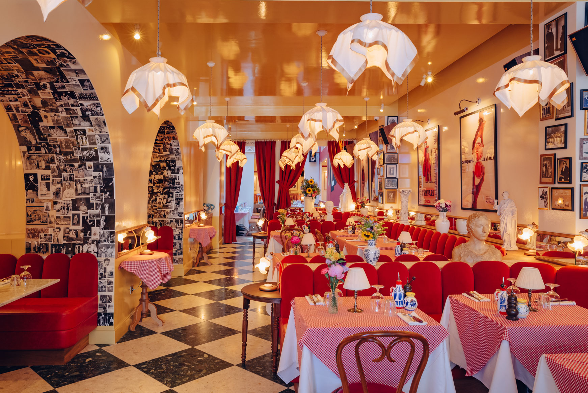

Small pics of our first visit


Bordeaux est tout simplement la ville française avec le plus de restaurants par habitant : environ 1 pour 285 habitants. Ainsi il n’est pas aisé de choisir où manger mais sachez que le vendredi et samedi soir, si vous n’avez pas réservé, il sera tout de même très compliqué de trouver une table de libre… même s’il y a tout plein de restaurants ici à Bordeaux.
En savoir plus sur l'Osteria Palatino Bonjour à la communauté, nous vous présentons aujourd'hui un restaurant typique bordelais : le Monzù. Cet établissement est une référence et un point incontournable de la ville de Bordeaux.
Avis (mettre photos)